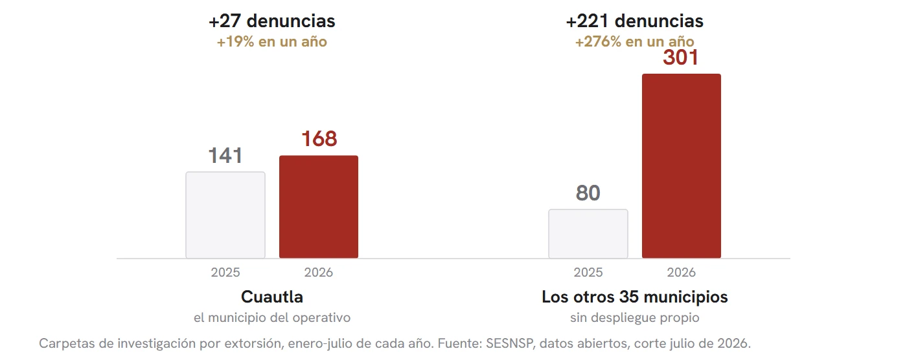
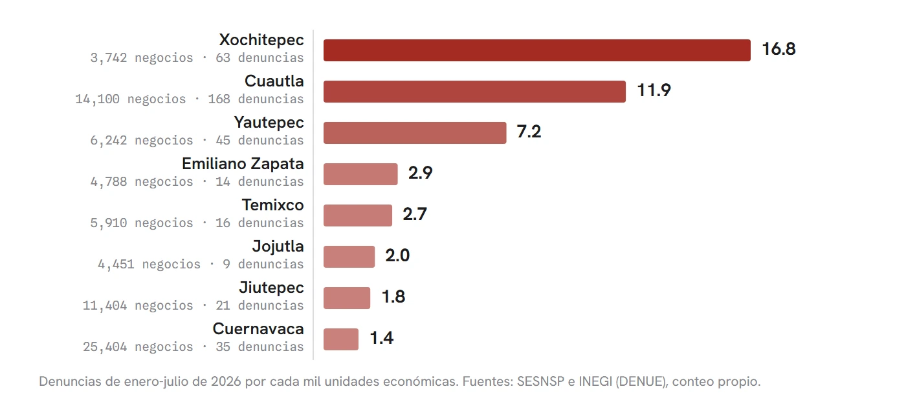
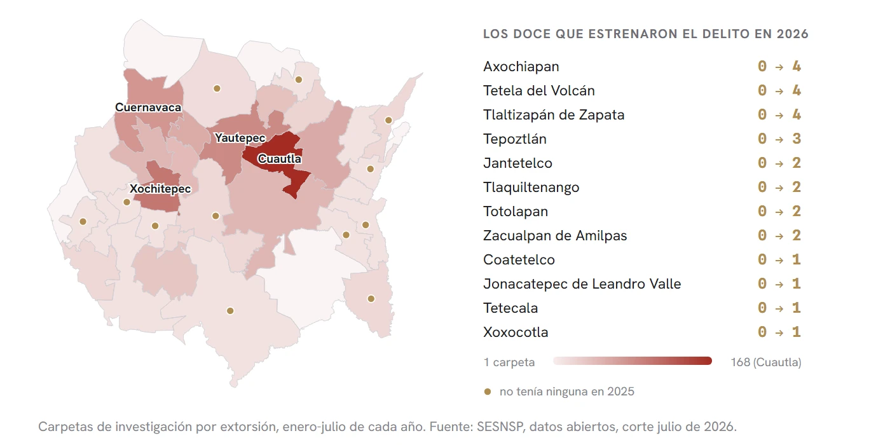

Ya no es solo Cuautla
Mientras el operativo federal se concentraba en Cuautla, la extorsión se expandió a los municipios con más negocios de Morelos. El conteo, municipio por municipio, con los datos abiertos del propio gobierno.
El 12 de julio de 2026, en la zona de Los Arcos, en Cuautla, una unidad de la Ruta 85 fue atacada a balazos: un muerto y un herido. Al día siguiente, en la base de esa misma ruta, sobre la avenida Reforma, dos hombres señalados como extorsionadores fueron asesinados al llegar al lugar. Dos días, tres muertos, una base de combis. Ninguna autoridad ha establecido públicamente el móvil; la cobertura periodística local liga ambos hechos al cobro de piso y la investigación sigue abierta.
Ahí es donde iba el asunto cuando llegó el operativo federal.
El tamaño real del problema suele contarse como si fuera un pleito de barrio, y no lo es. Con datos del Secretariado Ejecutivo al corte de julio, Morelos es el estado con más denuncias por extorsión por habitante de todo el país, con 22.9 por cada 100 mil. Cuautla es el municipio número uno de México. Xochitepec, que casi nadie menciona, es el número dos.
Sobre Cuautla ya se hizo algo. Desde el viernes 31 de julio opera ahí una base de operaciones mixta con 394 elementos y 79 unidades de la Guardia Nacional, el Ejército, la Marina, el Servicio de Protección Federal y corporaciones estatales y municipales, más la participación permanente en territorio de la Guardia Nacional, un grupo de inteligencia dedicado para Cuautla y un chat directo que ya reúne a 1,350 personas. En el informe del 18 de agosto, la Mesa de Coordinación presentó sentencias de 16 y 15 años por extorsión agravada y varias detenciones de presuntos cobradores. Nada de eso es humo.
Lo que no se presentó fue el resto del mapa.
Entre enero y julio de 2025 Morelos registró 221 denuncias por extorsión; 141 fueron de Cuautla. En el mismo periodo de 2026 sumó 469, y Cuautla aportó 168. En el municipio del operativo el cobro creció 19 por ciento. En los otros 35 municipios creció 276 por ciento. Como los porcentajes pueden hacer trampa cuando las bases son distintas, conviene verlo en casos contados: Cuautla sumó 27 denuncias nuevas, el resto del estado sumó 221. Ocho por cada una.

Los empresarios morelenses ya habían advertido algo parecido, y le pusieron un nombre que se entiende sin traducción: efecto cucaracha. Prendes la luz de un lado y se corren para el otro. Ellos reportaron movimiento hacia Jiutepec y Temixco, y los números les dan la razón: Jiutepec pasó de 7 denuncias a 21, Temixco de 2 a 16.
Pero esa explicación se queda corta, y ahí está lo interesante del caso.
En Xochitepec nadie prendió ninguna luz. No hubo operativo, ni despliegue, ni mesa local, ni chat de comerciantes. Pasó de 3 denuncias a 63 en siete meses. Ese municipio solo aportó 60 de las 221 denuncias nuevas del estado, más que Jiutepec y Temixco juntos. Si el cobro únicamente huyera de la presión policial, Xochitepec no debería estar en esta columna.
El cobro no se fue de Cuautla: ahora lo acompañan otros treinta municipios.
Fui a buscar qué tienen en común los municipios que crecieron. La respuesta está en el Directorio Estadístico Nacional de Unidades Económicas del INEGI, que cuenta uno por uno los negocios que existen en cada municipio del país. Los ocho municipios donde más creció el cobro en Morelos son, exactamente, las ocho economías más grandes del estado: Cuernavaca con 25,404 unidades económicas, Cuautla con 14,100, Jiutepec con 11,404, Yautepec con 6,242, Temixco con 5,910, Emiliano Zapata con 4,788, Jojutla con 4,451 y Xochitepec con 3,742. Donde no hay negocios, sigue sin haber cobro.
Ahora, el detalle que le da filo al hallazgo: no van por la economía más grande, sino por la más desprotegida. Cuernavaca tiene siete veces más negocios que Xochitepec y registra 1.4 denuncias de extorsión por cada mil unidades económicas. Xochitepec registra 16.8, y Cuautla 11.9. La capital concentra el dinero y también los mandos policiacos, las cámaras empresariales, las oficinas de gobierno. Los municipios medianos concentran el dinero y nada más.

Eso describe una decisión de negocio, no una fuga. Diego Gambetta demostró en The Sicilian Mafia que la extorsión funciona como industria: vende protección, necesita territorio y elige dónde instalarse según el costo de operar ahí. Thomas Reppetto, por su parte, catalogó en 1976 las formas en que un delito se desplaza cuando la vigilancia aprieta en un punto, y advirtió que ese desplazamiento tiene límites: hay actividades que, bloqueadas en un lugar, simplemente no reaparecen en otro. Con lo que hay sobre la mesa, Morelos parece estar viviendo las dos cosas a la vez. Una parte se movió porque la corrieron. Otra parte llegó porque le convenía llegar.
Queda la objeción obvia, y merece respuesta antes que aplauso: puede que no haya más cobro, sino más denuncia. La campaña de confianza, el chat, la presencia federal, todo eso empuja a la gente a acudir a la fiscalía. El problema con esa explicación es dónde está instalada la campaña. Está en Cuautla. Cuautla es el municipio donde el crecimiento fue menor. Si estuviéramos midiendo confianza en lugar de delito, la curva tendría que haberse levantado primero ahí.
La segunda objeción es técnica y la tengo que declarar: desde 2026 el Secretariado usa la metodología RNID, que partió la extorsión en dos modalidades donde antes había una sola categoría, así que una porción del salto puede ser registro nuevo y no delito nuevo. Lo que juega en contra de esa lectura es que el fraude, el cajón donde solían caer las extorsiones telefónicas, no se vació para llenar la categoría nueva: también subió, de 1,355 a 1,558 carpetas.
Hay que decir lo que sí mejoró, porque es parte del mismo corte de caja: el homicidio doloso bajó 12 por ciento en carpetas y 13.5 por ciento en víctimas frente a 2025.
No afirmo que el operativo haya provocado la expansión. Esa relación no está demostrada y estos datos no alcanzan para demostrarla. Lo que sí queda demostrado es más sencillo: mientras el estado miraba un municipio, el cobro se instaló en otros treinta, incluidos doce que en 2025 no tenían una sola denuncia. Tepoztlán, Axochiapan, Tlaquiltenango, Xoxocotla, Tetela del Volcán. Nada de eso apareció en las láminas del informe, y quien vive en esos pueblos no supo por la vía oficial que su municipio ya entró a la lista.

La prueba está a la mano y no requiere esperar a que alguien la anuncie. Si el crecimiento del resto del estado se sostiene en agosto y septiembre mientras Cuautla se estabiliza, entonces no fue una fuga temporal: fue una mudanza. Vamos a estar revisando ese número aquí, mes por mes, con los datos abiertos que publica el propio gobierno.
Me parece que aquella base de la avenida Reforma mide el problema mejor que cualquier lámina: tres muertos en dos días por una cuota.
- Secretariado Ejecutivo del Sistema Nacional de Seguridad Pública, Registro Nacional de Incidencia Delictiva, corte julio de 2026. Bases municipales y estatales de carpetas de investigación, enero-julio de 2025 y 2026: gob.mx/sesnsp/acciones-y-programas/datos-abiertos-de-incidencia-delictiva
- INEGI, Directorio Estadístico Nacional de Unidades Económicas (DENUE), descarga masiva de Morelos, conteo propio de unidades por municipio: inegi.org.mx/app/mapa/denue
- Tasas por 100 mil habitantes calculadas con población del Censo INEGI 2020 proyectada con crecimiento estatal de CONAPO: inegi.org.mx/programas/ccpv/2020
- Ruta 85, notas abiertas y cotejadas una por una (el móvil no lo atribuye ninguna autoridad en esas notas): El Sol de Cuautla, oem.com.mx/elsoldecuautla/seguridad/ataque-armado-contra-unidad-de-la-ruta-85-deja-un-muerto-y-un-herido-en-cuautla-31084601 y oem.com.mx/elsoldecuautla/seguridad/ataque-armado-deja-dos-presuntos-extorsionadores-sin-vida-en-base-de-la-ruta-85-de-cuautla-31103663
- Extorsión, cierres de negocios y homicidios vinculados al derecho de piso en Morelos: TV Azteca, 23 de julio de 2026, tvazteca.com/aztecanoticias/extorsion-cuautla-morelos-2026-aumento-negocios-inseguridad
- Base de Operaciones Mixta en Cuautla, con 394 elementos y 79 unidades, en funciones desde el viernes 31 de julio de 2026: Proceso, proceso.com.mx/nacional/estados/2026/7/31/despliegan-base-de-operaciones-mixta-con-casi-400-elementos-en-cuautla-377186.html
- Advertencia empresarial sobre el desplazamiento de extorsionadores hacia Jiutepec y Temixco: Diario de Morelos, diariodemorelos.com/noticias/detectan-despliegue-extorsionadores-en-morelos-operativos-en-cuautla-empresarios-encienden-alarmas y diariodemorelos.com/noticias/alerta-en-jiutepec-extorsionadores-huyen-operativos-cambian-municipios
- Informe mensual de la Mesa de Coordinación Estatal para la Construcción de Paz y Seguridad, 18 de agosto de 2026, retransmisión íntegra: youtube.com/watch?v=2GQqWw9EVT4
- Diego Gambetta, The Sicilian Mafia: The Business of Private Protection, Harvard University Press, 1993: hup.harvard.edu/books/9780674807426
- Thomas A. Reppetto, "Crime Prevention and the Displacement Phenomenon", Crime and Delinquency, vol. 22, núm. 2, 1976, pp. 166-177: journals.sagepub.com/doi/10.1177/001112877602200204
- Detalle municipal y metodología de la casa: 45digitalnoticias.github.io/Inseguridad-Mexico
Las ligas van a la vista para que cualquiera compruebe por su cuenta. Si alguna dejó de resolver, escríbenos y la reponemos.
SRVO